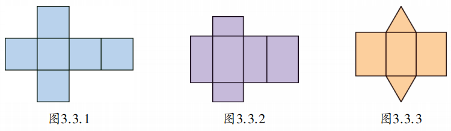
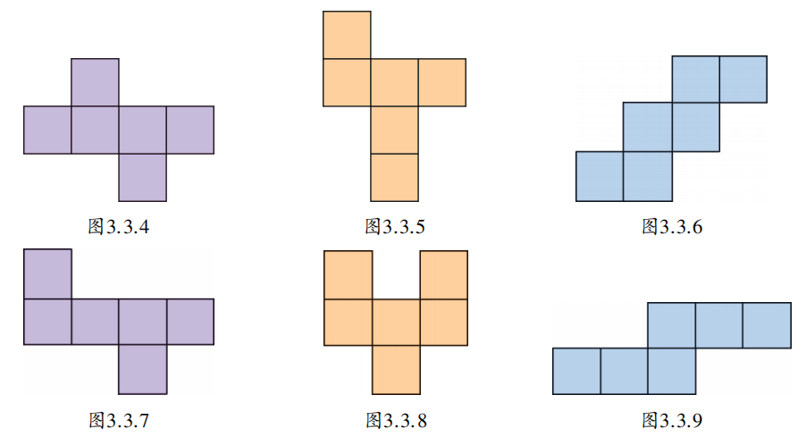
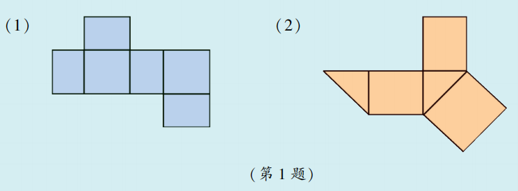
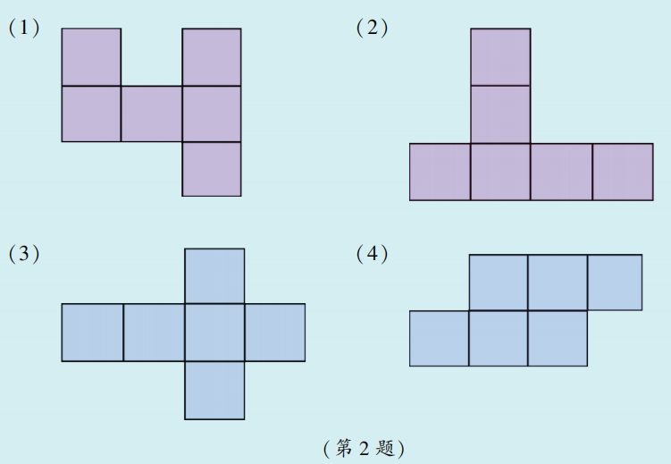
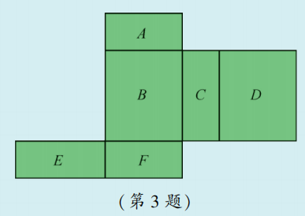

我们知道，圆柱的侧面展开图是长方形，而在实际生活中常常需要了解整个立体图形的表面展开的形状，如包装一个长方体形状的物体，需要根据它的表面展开图来裁剪纸张。下面要讨论的是一些简单多面体的表面展开图。
图3.3.1至图3.3.3是一些多面体的表面展开图，你能说出这些多面体的名称吗？

同一个立体图形，按不同的方式展开得到的表面展开图是不一样的。想想看，图3.3.4至图3.3.9的图形都是正方体的表面展开图吗？

下面是一个可交互的正方体展开图工具。你可以点击格子选择面，固定某个面，标记符号，并通过滑块控制折叠角度，直观感受展开与折叠的过程。
✨ 提示：拖动滑块可以逐渐折叠展开图，点击“固定面”可以指定一个面作为参考，尝试找出所有11种展开图。
1. 下列图形是某些多面体的表面展开图，请说出这些多面体的名称。

2. 下列图形都是正方体的表面展开图吗？

3. 一个多面体的每个面上都标注了字母，如图是该多面体的表面展开图，请根据要求回答问题：
（1）如果面 \(A\) 在多面体的底部，那么哪一面会在上面？
（2）如果面 \(F\) 在前面，从左面看是面 \(B\) ，那么哪一面会在上面？
（3）如果从右面看是面 \(C\) ，面 \(D\) 在后面，那么哪一面会在上面？

转化思想： 将立体图形转化为平面图形（展开），或将平面图形折叠成立体图形（还原），实现三维与二维的转化。
分类思想： 正方体的展开图有11种基本类型，通过分类研究掌握规律。
空间观念： 在头脑中想象折叠过程，发展几何直观。
生活中精美的包装盒大多由平面材料（如纸板）通过裁剪、折叠而成。设计师需要根据物体形状设计展开图，既要保证材料利用率高，又要使折叠后美观牢固。这其中蕴含着丰富的几何知识，如“共用边”“对边相等”“折叠角不变”等。数学中的展开与折叠，正是包装设计的基础。
✨ 从具体到抽象，用数学的眼光看世界 ✨